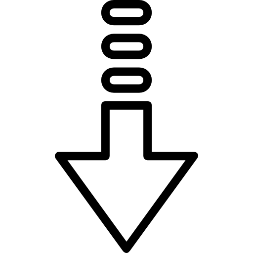

Willkommen zu Vitors Portfolio
Scrollen Sie nach unten

Lebenslauf
Klick hier, um die Datei als PDF herunterzuladen
Motivationsschreiben
Klick hier, um die Datei als PDF herunterzuladen
LinkedIn-Profil
Zum Profil